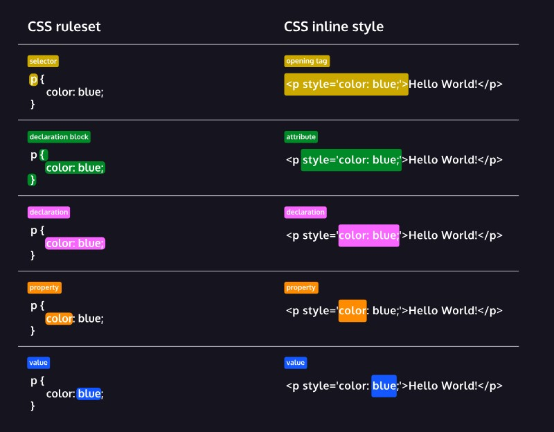
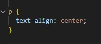
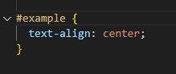
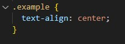
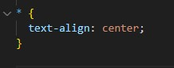

What is CSS?
CSS stands for "Cascading Style Sheets" and is used for styling a document written in a markup language such as HTML
CSS Syntax
CSS Selectors
In CSS, there are 4 types of selectors: Element, ID, Class and Universal
We use the element selector to select all of one element, The code below will make every paragraph element centered
We use the ID selector to select one specific element with that ID, You can only give one element the same ID, the code below will make the element with the ID "example" centered
We use the class selector to select a group of elements with that class, In contrast of ID, you can give multiple elements the same class, making it more useful. the code below will make any element with the class "example" centered
Lastly, we use the universal selector to select every single element in the file, the code below will make everything centered
There are things you can do with these selectors, like combine them (combinators), do specifics (pseudo-class and pseudo-element), etc. But these are the main ones you'll need
Useful CSS Properties
Here are some CSS Properties that may be useful to you:
1. color: Sets the text color (e.g., #000000 for black, #ffffff for white, or color names like "red" or "blue")
2. font-family: Specifies the font to use (e.g., Arial, sans-serif, Times New Roman)
3. font-size: Sets the font size (e.g., 16px, 1em, large)
4. font-weight: Controls the font weight (e.g., normal, bold, lighter, bolder)
5. text-align: Aligns the text horizontally (e.g., left, center, right, justify)
6. text-decoration: Adds or removes text decorations (e.g., underline, overline, line-through)
7. margin: Sets the outer spacing around elements (e.g., margin: 10px 20px 30px 40px).
8. padding: Controls the inner spacing around content within elements (e.g., padding: 10px)
9. border: Defines the border around elements (e.g., border: 1px solid #000)
10. width: Sets the element's width (e.g., 300px, 50%, auto)
11. height: Sets the element's height (e.g., 200px, 100vh)
12. background-color: Sets the background color of an element
13. background-image: Sets an image as the background
14. background-repeat: Controls how the background image repeats (e.g., repeat, no-repeat, repeat-x, repeat-y)
15. position: Specifies the positioning method (e.g., static, relative, absolute, fixed)
16. top: Sets the top position of an element
17. display: Controls how elements are displayed (e.g., block, inline, inline-block, none)
18. opacity: Sets the transparency of an element (e.g., 0.5 for 50% transparency)
CSS Box Model
In CSS, the term "box model" is used when talking about design and layout. The CSS box model is essentially a box that wraps around every HTML element. It consists of: content, padding, borders and margins. The image below illustrates the box model

Content: The thing you are trying to display itself
Padding: Space between the content and the border
Border: A border that goes around the padding and the content
Margin: Space between the border and other elements